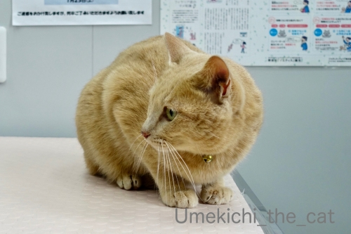
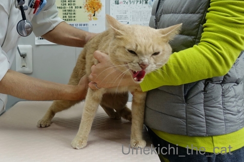
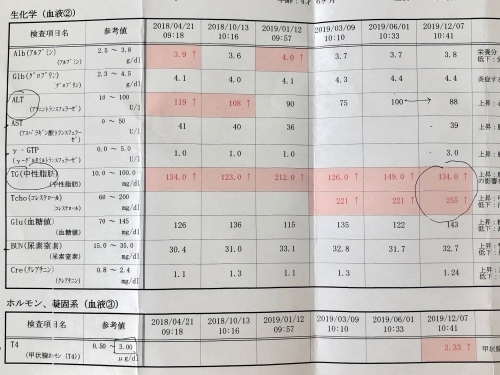
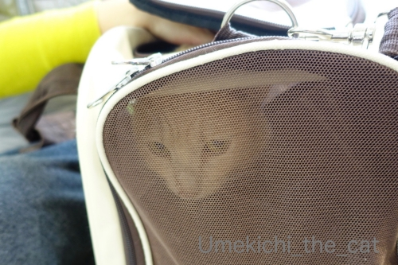
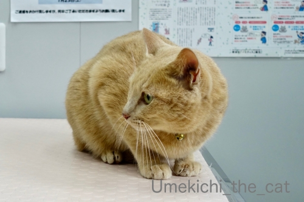
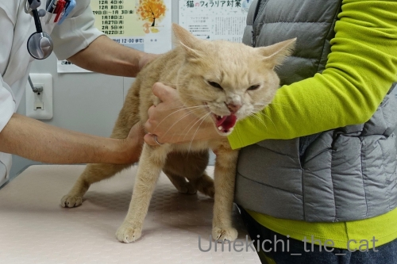
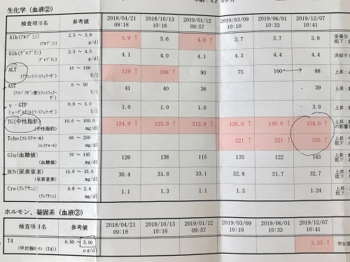
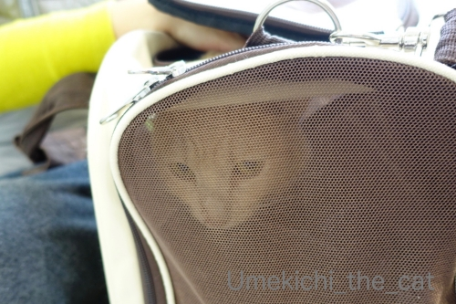

定期診察とレボリューションのこと [梅吉]
先日土曜日に梅吉の定期診察に行ってきました。
【補足説明】
梅吉は高脂血症と診断されて日々のお薬と定期通院（血液検査＆腹部エコー）が必要です。
一歳くらいですでに中性脂肪値が高かったこと、体重を落としても中性脂肪値は高いまま、
の結果を考えると生活習慣病ではなく体質です。
今の所、日々の生活では快眠、快便、爆食欲、一日数回爆走ととても元気で
特に問題は見当たらないのでご心配なく(^_－)☆
お薬は治療と体質改善を兼ねてます。
これまでの経緯はダイエット関係の話 、
初めてお薬を処方された頃の話、
処方されたお薬の話で記事にしてます。
タグの『病院』もあるので興味のある方はそちらを見てね＾＾

この日は珍しくキャリーに入れるのに手こずりました。
逃げ回ったりはしないのですが
キャリーの縁に足をかけて踏ん張るので二人掛かりで押し込むw
この踏ん張る足がまた可愛いのですよ・・・・・( ´艸｀)
病院の待合ではドーンと構える梅吉さんwわんこにめんちきったりしてましたwww
で、診察台の上で静かにお怒りモードです。

先生来たっ！
診察の際には必ずお腹の触診をしてもらうのですが
![[猫]](https://blog.ss-blog.jp/_images_e/101.gif) わしの！
わしの！

おなかを さわるとは！！

なにごとやっ！！！

シャーッッッッッッ！！！！！
とお怒りが爆発(⌒-⌒;
いつもこんな感じなので先生もスタッフの方も慣れたもので
「はいはいはいはいはいはい、堪忍やで〜（笑）」と診察が進んで行きますよ。

うー、わー、シャーシャー言っても暴れたりしないところが梅吉の良いところ。
採血のために別室に行く際は先生におとなしく抱っこされて行きます。

終わってスタッフの方に抱っこされて戻ってきました。
ありゃりゃ、この日は両足に針刺されちゃったね・・・・・

今回の採血結果。
前回から水薬（メトホルミン250 ）の濃度を濃くしたのですが
相変わらず中性脂肪の数値が芳しくありません。
先生ももう少し下がって欲しいなぁーと。
お薬の効きが今ひとつなのはなぜか？と調べるために甲状腺ホルモンの値も調べたのですが
こちらの数値もあまり良くない。
ホルモンの関係で中性脂肪値が下がらないことも考えられる、と。
後３ヶ月今のお薬を続けて改善がなければホルモンのお薬も試してみましょうとなりました。
う〜ん、梅吉のお薬の模索が続きます。

診察が終わってさっさとキャリーに入って「とっととかえるで」モードの梅吉さんw
レボリューションのハゲの件も相談してきました。
レボリューションを垂らしてから約６時間で脱毛、はちょっと早いかなぁと先生談。
２〜３日後に抜けることが多いようですよ。梅吉最短記録を更新！？
薬を点してから脱毛までの時間が短いので
今回の原因がレボリューションと言い切るにはちょっと疑問符。
もしかしたら他の可能性もあるのではないか？
毛が抜けた時に痒がったり痛がったり気にしている様子がなかったなら
とりあえずもう一回レボリューションを試してみましょうとなりました。
なぜ疑わしい薬をもう一度？と思われるかもしれませんが・・・
他の点薬を使っても皮膚への刺激は同じなので薬が原因の脱毛であれば他の薬でもきっとまたハゲる。
飲み薬もあるけれど、ノミ・マダニ忌避駆除薬とフィラリア対策用の飲み薬は別なので
２種の薬を飲ませなければいけない。
それは結構大変だよね。出来れば首の後ろにびしゃっと垂らして一回で終わりたいよね。
ならば今回のハゲは本当にレボリューションのせいなのか？を確認する方が良いかなぁ・・・
ということになったのです。
（もしレボリューションが原因じゃなければなぜ抜けたか、の疑問は残ってしまいますが）
この先寒い時期が続いてノミ・マダニ・蚊の活動が低下するので冬の間のレボリューションはお休み。
（この考え方には賛否ありますが今回の記事では触れません）
次回の診察は来年３月はじめなので、診察日の数日前にレボリューションをして
その結果も合わせて定期診察してもらう、ということになりました。
いろいろ持ち越しになってしまいましたが今年の病院はこれでおしまい。
梅吉のお怒りの「シャーーーーッッッッッッッ」も来春まで封印です(≧▽≦)

がんばった方にはまただび粉末絶賛増量キャンディのサービス！！
 ↑ガブッと一押し↑
↑ガブッと一押し↑
【補足説明】
梅吉は高脂血症と診断されて日々のお薬と定期通院（血液検査＆腹部エコー）が必要です。
一歳くらいですでに中性脂肪値が高かったこと、体重を落としても中性脂肪値は高いまま、
の結果を考えると生活習慣病ではなく体質です。
今の所、日々の生活では快眠、快便、爆食欲、一日数回爆走ととても元気で
特に問題は見当たらないのでご心配なく(^_－)☆
お薬は治療と体質改善を兼ねてます。
これまでの経緯はダイエット関係の話 、
初めてお薬を処方された頃の話、
処方されたお薬の話で記事にしてます。
タグの『病院』もあるので興味のある方はそちらを見てね＾＾

この日は珍しくキャリーに入れるのに手こずりました。
逃げ回ったりはしないのですが
キャリーの縁に足をかけて踏ん張るので二人掛かりで押し込むw
この踏ん張る足がまた可愛いのですよ・・・・・( ´艸｀)
病院の待合ではドーンと構える梅吉さんwわんこにめんちきったりしてましたwww
で、診察台の上で静かにお怒りモードです。
先生来たっ！
診察の際には必ずお腹の触診をしてもらうのですが

とお怒りが爆発(⌒-⌒;
いつもこんな感じなので先生もスタッフの方も慣れたもので
「はいはいはいはいはいはい、堪忍やで〜（笑）」と診察が進んで行きますよ。
うー、わー、シャーシャー言っても暴れたりしないところが梅吉の良いところ。
採血のために別室に行く際は先生におとなしく抱っこされて行きます。
終わってスタッフの方に抱っこされて戻ってきました。
ありゃりゃ、この日は両足に針刺されちゃったね・・・・・

今回の採血結果。
前回から水薬（メトホルミン250 ）の濃度を濃くしたのですが
相変わらず中性脂肪の数値が芳しくありません。
先生ももう少し下がって欲しいなぁーと。
お薬の効きが今ひとつなのはなぜか？と調べるために甲状腺ホルモンの値も調べたのですが
こちらの数値もあまり良くない。
ホルモンの関係で中性脂肪値が下がらないことも考えられる、と。
後３ヶ月今のお薬を続けて改善がなければホルモンのお薬も試してみましょうとなりました。
う〜ん、梅吉のお薬の模索が続きます。

診察が終わってさっさとキャリーに入って「とっととかえるで」モードの梅吉さんw
レボリューションのハゲの件も相談してきました。
レボリューションを垂らしてから約６時間で脱毛、はちょっと早いかなぁと先生談。
２〜３日後に抜けることが多いようですよ。梅吉最短記録を更新！？
薬を点してから脱毛までの時間が短いので
今回の原因がレボリューションと言い切るにはちょっと疑問符。
もしかしたら他の可能性もあるのではないか？
毛が抜けた時に痒がったり痛がったり気にしている様子がなかったなら
とりあえずもう一回レボリューションを試してみましょうとなりました。
なぜ疑わしい薬をもう一度？と思われるかもしれませんが・・・
他の点薬を使っても皮膚への刺激は同じなので薬が原因の脱毛であれば他の薬でもきっとまたハゲる。
飲み薬もあるけれど、ノミ・マダニ忌避駆除薬とフィラリア対策用の飲み薬は別なので
２種の薬を飲ませなければいけない。
それは結構大変だよね。出来れば首の後ろにびしゃっと垂らして一回で終わりたいよね。
ならば今回のハゲは本当にレボリューションのせいなのか？を確認する方が良いかなぁ・・・
ということになったのです。
（もしレボリューションが原因じゃなければなぜ抜けたか、の疑問は残ってしまいますが）
この先寒い時期が続いてノミ・マダニ・蚊の活動が低下するので冬の間のレボリューションはお休み。
（この考え方には賛否ありますが今回の記事では触れません）
次回の診察は来年３月はじめなので、診察日の数日前にレボリューションをして
その結果も合わせて定期診察してもらう、ということになりました。
いろいろ持ち越しになってしまいましたが今年の病院はこれでおしまい。
梅吉のお怒りの「シャーーーーッッッッッッッ」も来春まで封印です(≧▽≦)
がんばった方にはまただび粉末絶賛増量キャンディのサービス！！

カフェオレ色の梅吉

梅吉 2023年8月10日 永眠


梅吉と出会った譲渡会

犬猫の理由なき殺処分ゼロ
妄想広告
UMEKICHI 光

爆発的に早い！
時々攻撃的！
Thanks to Mr.Boss365
爆発的に早い！
時々攻撃的！
Thanks to Mr.Boss365

相当、お怒りのようですね:-)
でも、採血終わった後は、もうおとなしくなってたのかな？
ウチのは、家に帰ってくるまで、怒ったまんまです(^^;
by tama (2019-12-09 00:21)
梅吉さんの怒り顔がかっこいいですぅ!
by zombiekong (2019-12-09 00:46)
病院、お疲れ様でした。
元気に見えてもいろいろ大変ですね。
体質から来る病気とはいえ、なんとか克服して少しでもいい状態でずっとずっと一緒にのんびり暮らしたいですものね。
シャー！お怒りですね^m^ 迫力ある〜。
キャリーバッグに入りたくなくて両足を踏ん張ってるとこ、絶対かわいい！
想像しただけでニマニマしちゃう。みたかったー。
by ChatBleu (2019-12-09 06:42)
予防も大事ですけどねぇ。
12匹も居ると予防よりも
何かあってからの対処になってしまいます＾＾；
by ぽちの輔 (2019-12-09 06:49)
ムッとしつつも大人しく待ってるのに
先生がお腹を触った瞬間「シャーo(｀ω´ )o」
そして怒ってるのに抱っこされても攻撃に出ない梅吉さんは
本当に大人ですねぇ( ^ω^ )
うちのは先生に向かっては怒りま（れま？）せんw
by ニッキー (2019-12-09 07:17)
シャーの気持ち判ります。
病院で何をされるかワカランもんね？
私も病院は嫌いです（ﾟ□ﾟ）
by 英ちゃん (2019-12-09 07:39)
お怒りモードでも大人しくされるがまま（笑
梅吉さん！とても良い子です(#^.^#)
薬の調整、原因の追究ってかなり時間を
要しますし、なかなか難しいですよね・・
ひとつずつ潰していくしかない・・・
Ｌｅａもそうですが、頑張っていくしかないですよね(;^_^A
by きぃ (2019-12-09 08:13)
怒ってても、ちゃんと観念して診察受けてるのが
お利口さんですねー。
薬も色々あるのですね。少しずつ試すしたないのかな。
ともあれ今年の検査はおしまいとのこと、お疲れ様でしたー(^｡^)
by よーちゃん (2019-12-09 09:41)
梅吉さんは病院でお腹を触られるとシャーですね！
でも暴れないのは偉いですね。
人はお酒を飲むと高脂血症になっちゃいますね。
僕も薬飲んでいます(^^)
by ma2ma2 (2019-12-09 11:41)
梅吉さん＆おとーさん＆おかーさん定期診察お疲れさまでした。
キャリーに入りたくなくて踏ん張る梅吉さんの姿も見たかった(;^_^A
シャーのお顔もなんだかゾクゾクする愛おしいお顔ですねｗたまらないです。
暴れたり逃げ出したりしないところはさすが漢だねｗと褒めてあげましょう。
まただび粉末絶賛増量キャンディでますます大興奮でしたかしら(￣ｍ￣〃)
人間もお酒で高脂血症ですか！ ↑
私365日中360日くらいはお酒飲んでますが異常なしですｗ
by marimo (2019-12-09 12:02)
わ～！梅吉さん、こんな激怒りのしゃ～っ顔するんですね！！
けれど暴れたり噛みついたりしないのが、ええとこのボンボンです^^
ウチのがこの顔するのは帰宅してから。
診察台のうえでは助けて・・とばかりに看護師さんの腕にしがみつくだけ。めちゃくちゃ大人しい良い子で通っていて、下僕夫婦の傷だらけの手をみせると何で？？という顔されます(≧▽≦)
レボは子猫のころからず～っと毎月使っていますが、これまでのところ副作用らしきものはありませんでした。冬場休んでいいと思うのですが、毎月爪切りに病院へ通う関係上、やむを得ず継続しています。ネット上にはいろんな情報が氾濫していて判断に迷いますね^^;
ウチのも今「おえ～っ」の原因模索中です。
梅吉さんもお薬がうまく合って数値が安定しますように！
by ゆきち (2019-12-09 12:18)
こんにちは。
梅吉君のキャリー入室動画みたいです。踏ん張る足は魅力的です（笑）
梅吉君、マジ顔で吠えてますね。癒されるお顔です（笑）
ストレス溜まりそうですが、梅吉君の為です。
暴れないのは「敵ではない事」知ってますね。小生猫だと無理かも？
「中性脂肪の数値」気になりますが、お薬で改善する事願ってます。
レボリューションも気になりますが、原因追及の為に必要な行為です。来春？
粉末絶賛増量キャンディでご機嫌になってくれたかな！？(=^･ｪ･^=)
by Boss365 (2019-12-09 14:12)
梅吉さん、足踏ん張っちゃうのね～うちのもやりました＾＾；
本気のお怒りモードの顔、迫力！（‥でも可愛い‥）
暴れたりしないんだ～賢い良い子ですねえ＾o＾
またたび増量のキャンディ型で楽しんでね＾・＾
いい治療が見つかって落ち着きますように＾＾
by sana (2019-12-09 16:09)
梅吉さんのシャーッッッッッッ！！！！！は凄い迫力ですね(ﾟoﾟ;
でも、素直に先生に抱っこされている姿は本当に良い子です。
ご褒美のキャンディーは本当に嬉しかったでしょうね(^^)
by kou (2019-12-09 16:34)
お医者さん 嫌なんでしょうねぇ
俺も嫌だもんなぁ
by (。・_・。)２ｋ (2019-12-09 18:44)
シャァーーのお顔がいつもと全然違う～
でも可愛い(≧▽≦)
by palpal (2019-12-09 20:10)
わしの、おなかをさわるとはー～～シャーッ！
がツボすぎて、なんども繰り返し見てしまうーー
by liang (2019-12-09 20:22)
スゴイ形相ですね！！
でも採血が済んだ後のスッキリ顔がすばらしい！(≧▽≦)
お薬を模索し数値が安定することを願ってます。
お疲れ様でした。
by yes_hama (2019-12-09 22:12)
梅吉さんのシャーが見れて良かった。
封印せず、いつでもみたいな。
元気になってね＾＾
by riverwalk (2019-12-09 22:14)
定期診察お疲れ様でした(^^♪
そしてキャリーの縁に足をかけて踏ん張る姿見たかったなぁ～
診察から帰ってきたお顔が、
「お前ら覚えとけよ！」
と言ってるみたいでちょっとかわいい♪
by yamatonosuke (2019-12-10 01:40)
梅吉さんのシャ～～～！怒ってますね^^
by ニコニコファイト (2019-12-10 06:54)
こんなに可愛い顔があんなに怖い顔になるなんてｗ
うちの子達は病院では腰が抜けたようになってしまい
すごくおとなしいです。昨年他界したシャム猫のショパン
だけは病院でシャーシャー威嚇していたので懐かしくな
りました。写真に残しておけばよかったなぁ。
by mio (2019-12-10 06:58)
梅吉さん、すっごい形相で怒ってますね（笑）
初めて見た顔のような（笑）
ちぃさんとしては、こういう顔を
たまに見るのも嬉しいのでしょう！ネッ（笑）
健康に関してのことが
早く改善できると良いですね。
by kiki (2019-12-10 07:25)
猫にも高脂血症なんてあるんですね、人並みです。
by 旅爺さん (2019-12-10 17:53)
お薬は続くのですねー。
コレ！っていう原因がわからないのは
もやもやするけど、焦らず、なのかなあー
シャーしてる顔が可愛くてニヤニヤしながら
ズームして見てました(笑
うちの2にゃん、シャーしないからさあ。
うみは、あおに対してだけシャーする(笑
by リュカ (2019-12-11 09:39)
通院お疲れさまでしたーー。
ふふ あまり日ごろお見かけしないシャーー顔が
見れて、ワタシ的にはうれしいです(*≧ｍ≦)=3
うちも暴れん坊将軍なので、ネット必須なのです＾＾
全然太っていない(ように見える)のに...
うちはダイエット命令が出ていて、それ用のフードを
食べさせているのに痩せません(笑)病気している間も
食欲だけは落ちず、痩せませんでしたｗｗ
手術の時に脂肪が邪魔するから痩せなさい、とのこと＾＾
ま、食べないよりはいいかと思っていますが(￣┰￣;)ゞ
by カトリーヌ (2019-12-11 16:38)
シャーーーーな梅吉くん、可愛いっ♪
検査へ連れていかれる時のお顔が心細そうで(≧▽≦)
家は、今病院でシャーする子がいないので楽だけどあっけないのｗ
梅吉くんの数値が下がって安心したいね。
by emi (2019-12-11 18:36)
中性脂肪＠＠ 私は人間ですけど高いので
わがことのように読んでしまいました。
多分、原因は運動不足＆B秘なんですけどねw
by サンダーソニア (2019-12-12 22:42)